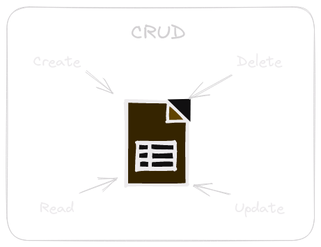
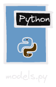
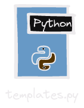

Model Template View en Django.

En esta lección, profundizaremos en el patrón de arquitectura que utiliza el Framework Django Modelo-Template-View (MTV), adicional a ello vamos a aprender cómo se aplica al crear un CRUD de tareas.
Conceptos Clave
CRUD.

Crud es un acrónimo conformado por las iniciales de estas 4 palabras en ingles:
| Create | Crear |
| Read | Leer |
| Update | Actualizar |
| Delete | Eliminar |
Esto hace referencia al desarrollo de una aplicación que permita Crear registros, Leer registros, Actualizar registros y Eliminar registros, en esta clase trabajaremos un CRUD de Tareas para aprender del proceso.
Un punto importante es conocer acerca de las peticiones http, ya que es la forma en como nos comunicamos con un servidor creado por un framework web en la actualidad.
Peticiones Http.

Gracias a este artículo Mozilla (2023) de Mozilla Developers podemos conocer los métodos básicos crear peticiones http.
| Método | Concepto |
|---|---|
| GET | El método GET solicita una representación de un recurso específico. Las peticiones que usan el método GET sólo deben recuperar datos. |
| POST | El método POST se utiliza para enviar una entidad a un recurso en específico, causando a menudo un cambio en el estado o efectos secundarios en el servidor. |
| PUT | El modo PUT reemplaza todas las representaciones actuales del recurso de destino con la carga útil de la petición. |
| DELETE | El método DELETE borra un recurso en específico. |
| PATCH | El método PATCH es utilizado para aplicar modificaciones parciales a un recurso. |
Esta información es de suma importancia cuando creemos un API Rest con Django Rest Framework
Modelo (Model).

El Modelo en Django define la estructura de la base de datos y cómo se almacenan los datos. Cada modelo corresponde a una tabla en la base de datos.
Plantilla (Template).

Las Plantillas en Django son archivos HTML que definen la estructura visual de las páginas web. Permiten la presentación de datos a los usuarios.
Vista (View).
Las Vistas en el Framework Django controlan qué datos se muestran en una página web y cómo se presentan. Se encargan de la lógica de negocio y trabajan con los modelos y plantillas.
Ejemplo de Modelo
# Definición de un modelo para crear Tareas en Django
from django.db import models
class Tarea(models.Model):
titulo = models.CharField(max_length=200)
descripcion = models.TextField()
fecha_creacion = models.DateTimeField('fecha de creación')
def __str__(self):
return self.tituloEjemplo de Plantilla
# Plantilla HTML para mostrar la lista de tareas
<!DOCTYPE html>
<html>
<head>
<title>Lista de Tareas</title>
</head>
<body>
<h1>Tareas Pendientes</h1>
<ul>
{% for tarea in lista_tareas %}
<li>{{ tarea.titulo }}</li>
{% endfor %}
</ul>
</body>
</html>Ejemplo de Vista
# Vista en Django para mostrar la lista de tareas
from django.shortcuts import render
from .models import Tarea
def lista_tareas(request):
tareas = Tarea.objects.all()
return render(request, 'lista_tareas.html', {'lista_tareas': tareas})Ejemplo del archivo url de la aplicación
# En el archivo urls.py de la aplicación Django
from django.urls import path
from . import views
urlpatterns = [
path('tareas/', views.lista_tareas, name='lista_tareas'),
]Ejemplo del archivo url del proyecto
from django.contrib import admin
from django.urls import path, include
urlpatterns = [
path('admin/', admin.site.urls),
path('', include('tarea.urls')),
]Ejemplo de la modificación del archivo settings.py
# Application definition
INSTALLED_APPS = [
'django.contrib.admin',
'django.contrib.auth',
'django.contrib.contenttypes',
'django.contrib.sessions',
'django.contrib.messages',
'django.contrib.staticfiles',
'tarea',
]Ejemplo de la modificación del archivo admin.py de la aplicación
from django.contrib import admin
from .models import Tarea
admin.site.register(Tarea)Explicación
En este ejemplo, hemos definido un modelo Tarea que representa una tarea en nuestra base de datos. Luego, creamos una plantilla HTML lista_tareas.html que muestra una lista de tareas. Finalmente, creamos una vista lista_tareas que recupera todas las tareas y las muestra utilizando la plantilla.
- Crea un modelo Django llamado Nota que tenga un campo para el título y otro para el contenido de la nota.
- Crea una plantilla HTML llamada lista_notas.html que muestre una lista de notas.
- Crea una vista en Django llamada lista_notas que recupere todas las notas y las muestre utilizando la plantilla.
Solucion
Resumen:
En esta actividad práctica, se creará un modelo Django llamado “Nota” con campos para el título y el contenido de la nota. Luego, se creará una plantilla HTML llamada “lista_notas.html” para mostrar una lista de notas. Finalmente, se creará una vista Django llamada “lista_notas” que recuperará todas las notas y las mostrará utilizando la plantilla.
Código:
- Crear el Modelo Django Nota:
En el archivo models.py de la aplicación correspondiente (generalmente llamada articulos), define el modelo Nota con campos para el título y el contenido de la nota:
# Importar el módulo 'models' de Django
from django.db import models
class Nota(models.Model):
# Definir los campos del modelo Nota
titulo = models.CharField(max_length=200)
contenido = models.TextField()
def __str__(self):
return self.tituloDentro de la carpeta de la aplicación (articulos en este ejemplo), crea una carpeta llamada templates si aún no existe. Luego, crea un archivo HTML llamado lista_notas.html en la carpeta “templates” con el siguiente contenido:
<!DOCTYPE html>
<html lang="es">
<head>
<meta charset="UTF-8">
<title>Lista de Notas</title>
</head>
<body>
<h1>Lista de Notas</h1>
<ul>
{% for nota in notas %}
<li>{{ nota.titulo }}</li>
<p>{{ nota.contenido }}</p>
{% endfor %}
</ul>
</body>
</html>- Crear la Vista Django lista_notas:
En el archivo views.py de la aplicación (articulos en este ejemplo), crea una vista llamada lista_notas que recupere todas las notas y las pase a la plantilla lista_notas.html:
# Importar el módulo 'render' de Django y el modelo 'Nota'
from django.shortcuts import render
from .models import Nota
def lista_notas(request):
# Recuperar todas las notas de la base de datos
notas = Nota.objects.all()
# Renderizar la plantilla 'lista_notas.html' con las notas como contexto
return render(request, 'lista_notas.html', {'notas': notas})Explicación:
- Hemos creado un modelo Django llamado Nota que contiene dos campos: titulo y contenido.” El campo titulo es un CharField con una longitud máxima de 200 caracteres, y el campo contenido es un TextField para almacenar el contenido más extenso de la nota.
- Creamos una plantilla HTML llamada lista_notas.html que se utilizará para mostrar la lista de notas. En esta plantilla, utilizamos etiquetas de plantilla de Django ({% for … %}) para iterar sobre todas las notas y mostrar tanto el título como el contenido de cada nota.
- Creamos una vista Django llamada lista_notas en el archivo views.py. En esta vista, recuperamos todas las notas utilizando Nota.objects.all() y luego pasamos las notas a la plantilla lista_notas.html como un contexto para que puedan mostrarse en la página.
Con estos pasos, hemos configurado un modelo, una plantilla y una vista para mostrar una lista de notas en una aplicación Django.
Ahora puedes acceder a la vista lista_notas en tu aplicación para ver la lista de notas en la plantilla correspondiente.
¿Qué aprendimos?
En esta lección, aprendimos cómo se aplican los conceptos Modelo, Plantilla y Vista en el Framework Django para crear una lista de tareas. Entendemos cómo este framework maneja la lógica de negocio y la presentación de datos de manera separada.